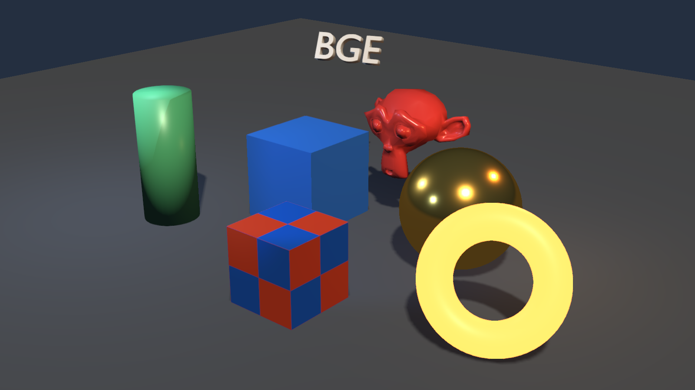
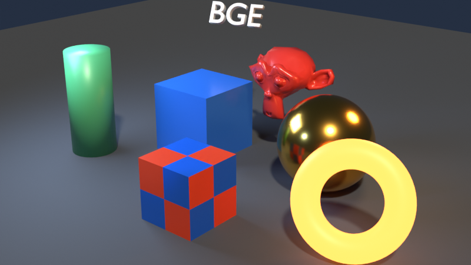
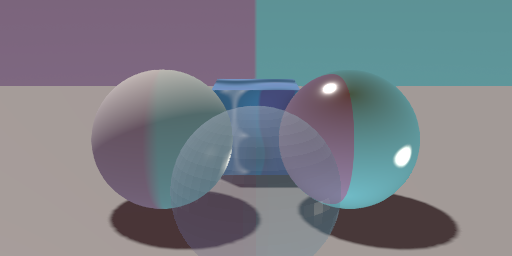
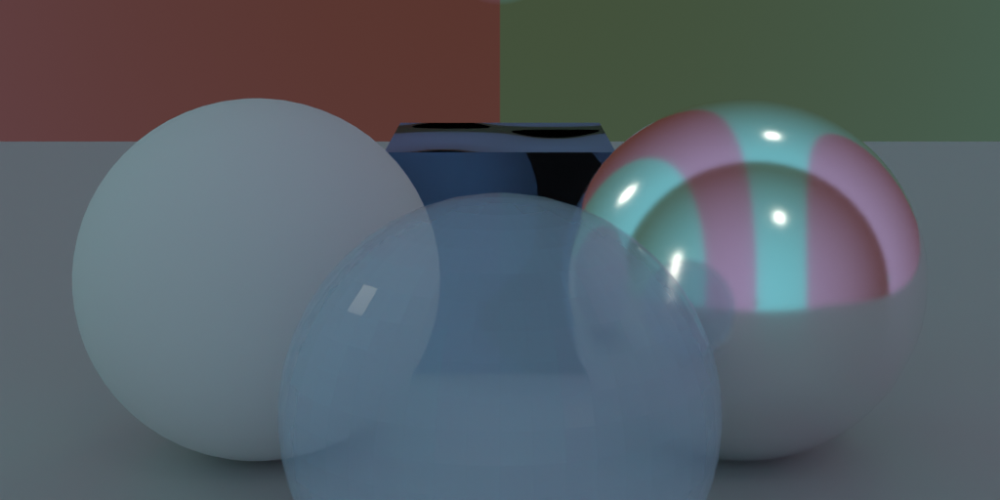

Real .blend scenes, rendered by the engine.
BGE Revived does not embed Blender. Blender stays the authoring front-end; a file-based exporter writes a compact scene description that the engine loads, so the same scene can be rendered headlessly, on a server, or inside a game.
The pipeline
1. Export
tools/bge_export.py runs inside Blender and walks the evaluated depsgraph,
so modifiers, curves, text and surface objects are converted to real meshes. Object
transforms are baked into world space (Blender is Z-up, the engine is Y-up, and the
exporter converts positions, normals and light directions consistently).
blender --background scene.blend --python tools/bge_export.py -- --out build/scene
2. Scene format
A JSON manifest plus one binary buffer: scene.bgescene holds materials,
meshes, objects, lights, cameras, world and render settings; scene.bin holds
packed vertices (position, normal, UV) and indices. Textures are copied next to the
manifest, HDR environments keep their original file.
3. Import
engine/src/scene/scene_loader.cpp parses the manifest with the engine's own
dependency-free JSON reader, uploads meshes and textures, creates entities for every
object, light and camera, and applies the world and render settings.
bge_sandbox --scene build/scene/scene.bgescene --headless --screenshot out.png
4. Compare
tools/parity_check.py runs the whole loop and prints a block-by-block
colour difference against a Cycles render, so visual regressions are measurable instead of
anecdotal.
python tools/parity_check.py --reference
What is supported
| Blender feature | Status | Notes |
|---|---|---|
| Sun, point, spot and area lights | Supported | Energy, colour, radius, spot cone and blend, range, rectangular area size, one-sided emission |
| World background colour and strength | Supported | Flat sky and procedural gradient |
| World environment texture | Partial | Equirectangular LDR and Radiance .hdr; vertical orientation is offset from Blender |
| Camera | Supported | Lens, sensor fit, field of view, near/far, orthographic scale, shift, active camera selection |
| Principled materials | Partial | Base colour, metallic, roughness, emission colour and strength, alpha; base colour and normal map textures |
| Objects | Supported | Meshes, modifiers, curves, text, mirrored transforms, per-object shadow flags |
| Render settings | Partial | Exposure and Standard view transform are exact; AgX and Filmic are approximated |
| Animation, armatures, particles | Not yet | Planned for the M1/M2 milestones |
Reference comparison
The test scene contains a ground plane, a blue cube, a gold sphere, Suzanne, a pillar, an emissive ring, a textured cube and a text object, lit by one sun, one area, one point and one spot light. Left: the engine. Right: Cycles in Blender.


Environment lighting
A second scene uses an equirectangular Radiance
.hdr world, a normal mapped cube and an alpha blended sphere. The engine
reproduces the environment split and the IBL response; the environment image is sampled with a
different vertical convention than Blender, which is the main visible difference.

.hdr environment.
Limitations
- The environment map is sampled with a lat-long mapping whose vertical axis is offset from Blender's world texture coordinates.
- Only one directional light renders shadows; other light types are unshadowed.
- Diffuse image-based lighting is an irradiance approximation rather than a prefiltered probe.
- AgX and Filmic view transforms are approximated with an ACES curve.
.exrenvironments are not supported; Radiance.hdrand LDR images are.- Normal maps rely on screen-space derivatives instead of imported tangents.